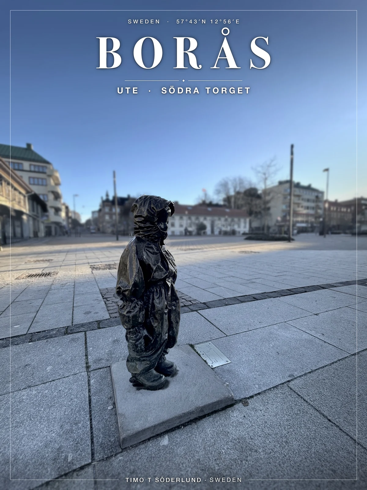

Ute · Södra Torget
Bronze Sculpture by Charlotte Gyllenhammar (2005) · Södra Torget, Borås, Sweden
English
Commissioned by the City of Borås in 2004 and placed at Södra Torget in 2005 according to the city's public sculpture guide, Charlotte Gyllenhammar's bronze sculpture Ute depicts a small child bundled in an oversized hooded overall, mittens, and boots. Facing quietly toward Viskan and Stadsparken, the brown-patinated bronze figure stands alone in cool Nordic morning shade with a diagonal band of golden sunlight crossing the open granite square behind the figure. Photographed by Timo T Söderlund for Borås Poster Project 2026.
Svenska
Beställd av Borås Stad 2004 och placerad på Södra Torget 2005 enligt stadens konstguide gestaltar Charlotte Gyllenhammars bronsskulptur Ute ett litet ensamt barn i en stor overall med huva, vantar och stövlar. Vänd mot Viskan och Stadsparken står den brunpatinerade bronsfiguren stilla i den svala nordiska morgonskuggan, med ett diagonalt band av gyllene morgonsol över det öppna granittorget bakom skulpturen. Fotograferad av Timo T Söderlund för Borås Poster Project 2026.
Photographer & Edition: Timo T Söderlund · Borås, Sweden (2026)